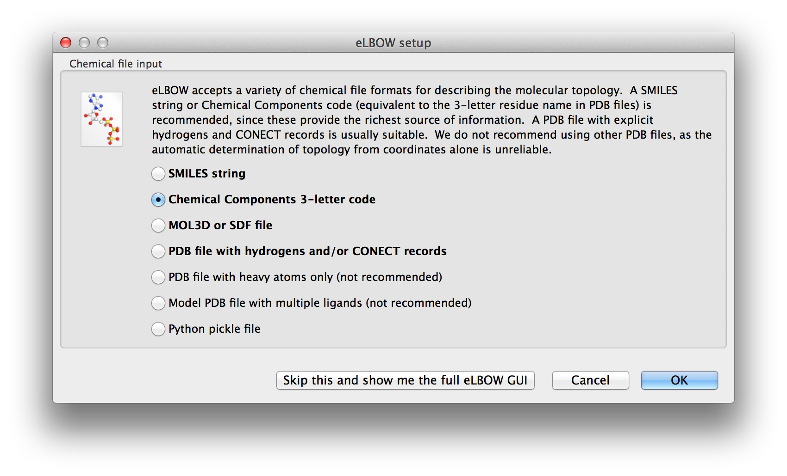
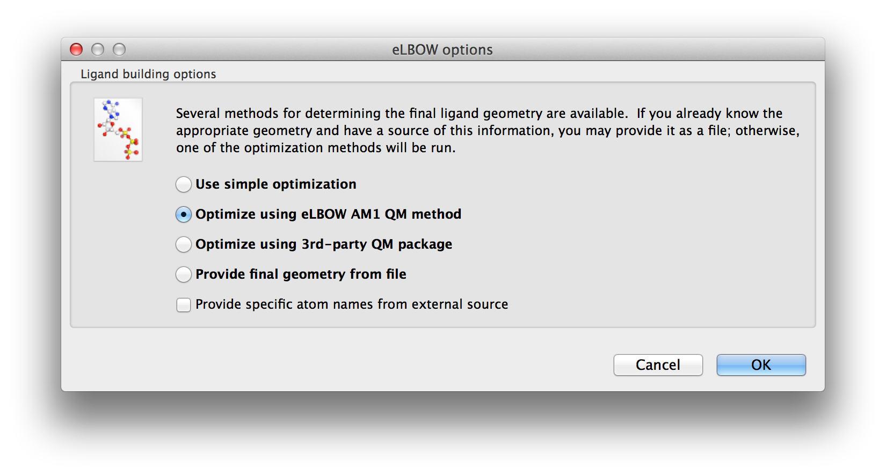
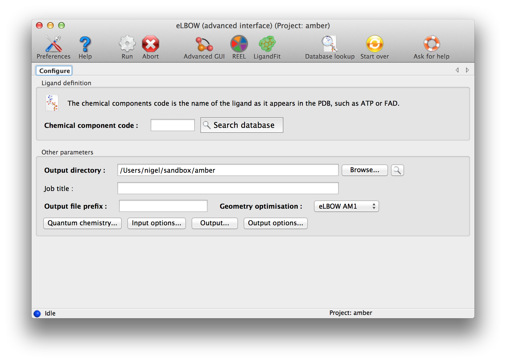
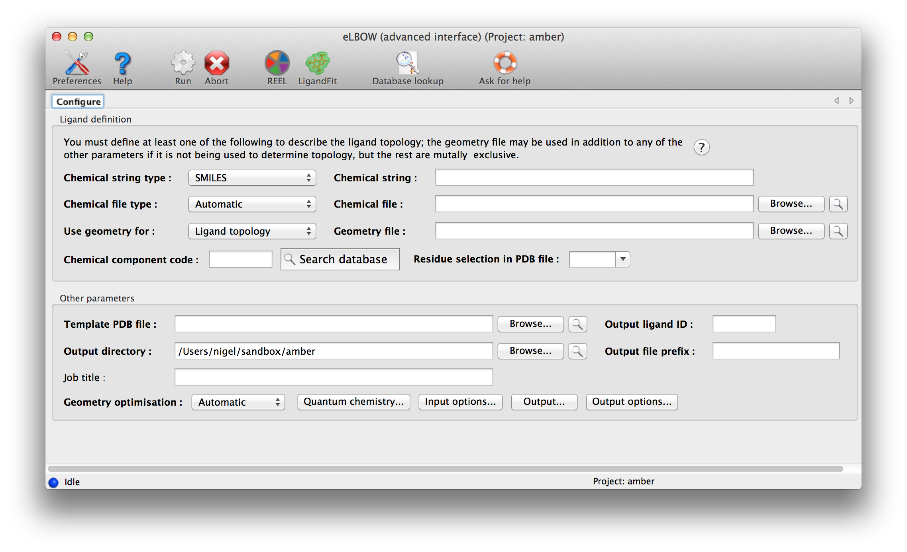
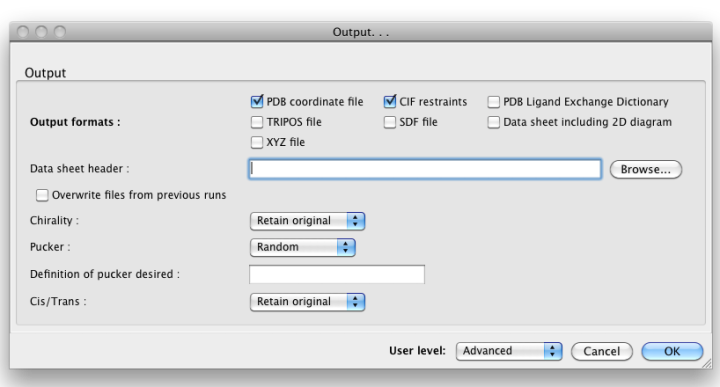
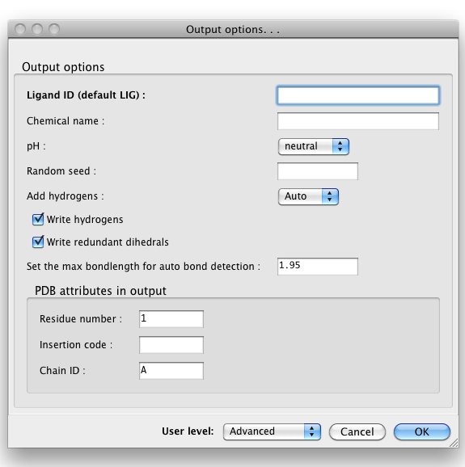

The electronic Ligand Builder and Optimization Workbench (eLBOW) is the primary tool for generating non-standard ligand restraints in Phenix. In addition to existing as a standalone program, it is also used internally by the LigandFit wizard and phenix.ready_set (integrated with the phenix.refine GUI). In addition to eLBOW, a separate standalone graphical restraint editor is available for advanced customization of restraints and structures.
There are actually two eLBOW GUI available in the Ligands menu. The first is a wizard-like interface that asks questions about the available inputs and the desired outcomes. The first screen asks for the basic inputs. These are explained in the Input section.

Above: The first screen of the wizard-like eLBOW GUI with the Chemical component parameter selected.
Once the basic inputs are provided the possible geometry optimisations are presented for selection.

Above: The second screen of the wizard-like eLBOW GUI with the AM1 optimisation parameter selected.
The final screen is customised to show you the parameters that apply to your choices. You can make some more changes and "Run".

Above: Final screen of the wizard-like eLBOW GUI.
An advance GUI for expert or those who wish to use some of the more complicated parameters is available.

Above: data entry window for eLBOW in the Phenix GUI. Input parameters are grouped separately at top.
eLBOW has extremely flexible options for describing ligand information. The only mandatory data are some description of the molecular topology, i.e. atomic composition and (implicit or explicit) bond connectivity. Four different sources of information may be used:
- SMILES string: this is a simplified syntax for uniquely representing molecules as text strings, invented by Daylight CIS. It is often found as part of various internal or public databases. This is usually the most reliable form of information to use, if available. (You can also provide it as a file, in the "Chemical file" input.)
- Chemical file: this is either a file containing a single SMILES string, or one of a number of different formats, such as .mol, .sdf, or TRIPOS MOL2 files, or some CIF files. Most of these are at least as good as SMILES strings, although some CIFs are incomplete and less suitable for use in eLBOW.
- Chemical Components code: this is a three-letter residue code taken from the PDB Chemical Component Dictionary. We distribute this database (in CIF format) with Phenix; for all but a handful of molecules, the available data include a SMILES string, and often the geometry as well. If you are using a ligand already present in the PDB and know the code, this is probably the fastest way to run eLBOW.
- Geometry file: this is usually a PDB file, although other formats are possible. Although the geometry file may be useful to tell eLBOW the expected output geometry, it is often less ideal as a description of topology. We recommend using one of the other sources of information as the primary input if possible. The PDB file does not necessarily need to be limited to the ligand of interest; use the input field labeled "Residue selection in PDB file" to select the three-letter code to use. (The drop-down menu will automatically be populated with unrecognized residues.)
Only one source of topology information may be provided, but you may also provide the geometry file in addition to one of the first three inputs, to guide eLBOW in constructing the resulting model. You will need to change the drop-down menu labeled "Use geometry for:" to one of the other three options if you do this. The geometry is especially useful if you already have placed the ligand in your structure and now need to refine it.
A final source of information is a PDB file containing the template atom names; the geometry and topology information will be discarded. If this is not provided, Phenix will generate atom names for the output model and CIF file automatically.
By default, eLBOW will generate a PDB file and a CIF file, suitable for use in any other Phenix app (or third-party software). Additional output formats are available and may be selected by clicking the "Output. . ." button. You may also manipulate other details such as chirality, Cis/Trans, ring pucker and PDB file attributes (including ligand code if you are starting from a SMILES string).

Above: the "Output. . ." dialog.

Above: the "Output options. . ." dialog.
We recommend opening the output CIF file in REEL to make sure that the results are what you expect. The CIF may be used in any applications requiring restraints as input (primarily phenix.refine, the validation tools, and the AutoBuild and LigandFit wizards). If you have not already placed your ligand in the model, the PDB file is suitable for this, but we recommend trying LigandFit first to save time.